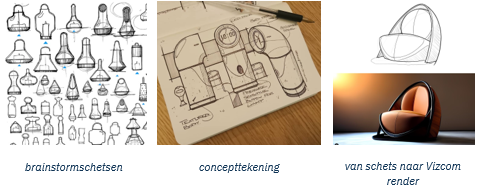
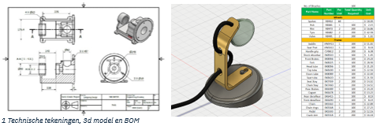
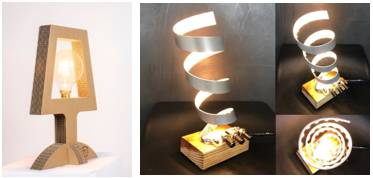

Project: Product Ontwerpen
Industrieel Ontwerpen is een vakgebied waarin je producten maakt die handig zijn én er goed uitzien. Ontwerpers combineren creativiteit, wetenschap en techniek om slimme oplossingen te bedenken voor problemen uit het dagelijks leven. Ze volgen daarbij een duidelijk stappenplan: eerst onderzoeken ze de gebruiker en zijn behoeften, daarna bedenken ze ideeën, maken een prototype en testen dit om het steeds beter te maken.
In dit project ga jij zelf aan de slag als industrieel ontwerper. Je kiest een echte gebruiker, onderzoekt zijn of haar probleem, bedenkt verschillende oplossingen en maakt uiteindelijk een werkend prototype. Tijdens het project gebruik je onder andere de ontwerpsoftware Fusion 360. Je leert niet alleen technisch ontwerpen, maar ook creatief denken en goed communiceren met je gebruiker.
Opdracht
Ontwikkel een product dat een behoefte vervult en positieve invloed heeft voor een specifieke gebruiker. Doorloop het volledige ontwerpproces en maak een werkend prototype.
Deliverables
- verslag met per stap feedback van de gebruiker
- Werkend prototype
Tijdsplanning
- Week 1: Gebruiker vinden en interviewen, probleemdefinitie.
- Week 2: Eisen/wensen opstellen en conceptontwikkeling.
- Week 3: Detailontwerp en beginnen met het modelleren in Fusion 360.
- Week 4: Voltooien van het 3D-model en de technische tekeningen in Fusion 360, prototype bouwen en testen.
- Week 4: Prototype bouwen en productiemethode.
- Week 5: Prototype bouwen en testen.
- Week 6: Feedback verwerken en verbeteringen aanbrengen.
- Week 7: Presentatie voorbereiden en houden.
Leerdoelen
- Ik kan binnen één week een geschikte gebruiker vinden en een gestructureerd interview afnemen om een specifiek probleem of behoefte vast te stellen.
- Ik kan binnen twee dagen na het interview een duidelijke probleemdefinitie en een lijst met eisen en wensen opstellen, goedgekeurd door de gebruiker.
- Ik kan binnen één week minimaal drie verschillende concepten bedenken, visualiseren en deze presenteren aan de gebruiker, waarbij ik constructieve feedback ontvang en verwerk.
- Ik kan binnen twee weken een gedetailleerd ontwerp maken in Fusion 360, inclusief technische tekeningen met correcte afmetingen en specificaties, en de gebruiker om feedback vragen en verwerken.
- Ik kan binnen twee weken een werkend prototype bouwen en het prototype testen.
- Ik kan binnen een week na het testen van het prototype de ontvangen feedback verwerken en noodzakelijke verbeteringen doorvoeren, en het prototype opnieuw testen om te bevestigen dat het werkt.
- Ik kan binnen een week een duidelijke en gestructureerde presentatie voorbereiden en geven, waarin ik het ontwerpproces, de ontvangen feedback en het eindresultaat uitleg, inclusief een demonstratie van het werkende prototype en een bespreking van de technische tekeningen en het 3D-model in Fusion 360.
Beoordeling – Rubric
| Criteria | Onvoldoende (1) | Voldoende (2) | Goed (3) | Uitstekend (4) |
|---|---|---|---|---|
| Gebruiker vinden en interviewen | Niet in staat een geschikte gebruiker te vinden of interview is onvolledig. | Gebruiker gevonden, interview uitgevoerd, maar niet gestructureerd of onvoldoende inzichtelijk. | Gebruiker gevonden, gestructureerd interview, voldoende inzicht in probleem/behoefte. | Snel een geschikte gebruiker gevonden, zeer gestructureerd interview, diepgaand inzicht. |
| Probleemdefinitie en eisen/wensen | Probleemdefinitie en eisen/wensen zijn onduidelijk of ontbreken. | Probleemdefinitie en eisen/wensen opgesteld, maar missen duidelijkheid of goedkeuring gebruiker. | Duidelijke probleemdefinitie en eisen/wensen opgesteld, goedgekeurd door gebruiker. | Zeer duidelijke probleemdefinitie en uitgebreide eisen/wensen, goedgekeurd en gedetailleerd. |
| Conceptontwikkeling | Minder dan drie concepten, of concepten zijn slecht uitgewerkt en niet besproken met gebruiker. | Drie concepten bedacht, matig uitgewerkt, beperkte feedback van gebruiker ontvangen. | Drie duidelijke en goed uitgewerkte concepten, constructieve feedback van gebruiker verwerkt. | Drie zeer innovatieve en goed uitgewerkte concepten, uitgebreide en constructieve feedback verwerkt. |
| Detailontwerp in Fusion 360 | Geen of onvolledig detailontwerp, technische tekeningen en specificaties ontbreken. | Detailontwerp gemaakt, maar technische tekeningen zijn onvolledig of onnauwkeurig. | Gedetailleerd ontwerp in Fusion 360, nauwkeurige technische tekeningen met specificaties. | Zeer gedetailleerd en nauwkeurig ontwerp in Fusion 360, uitgebreide en precieze technische tekeningen. |
| Prototype | Prototype onvolledig of werkt niet, materialen slecht gekozen of gemonteerd. | Prototype gebouwd, maar heeft significante functionele problemen of tekortkomingen. | Goed werkend prototype, functionele en esthetische aspecten adequaat uitgevoerd. | Uitstekend werkend prototype, zeer zorgvuldig gebouwd, goed functioneel en esthetisch afgewerkt. |
| Feedback en verbeteringen | Feedback niet gevraagd of verwerkt, prototype niet verbeterd. | Feedback gevraagd, maar beperkt verwerkt, minimale aanpassingen aan prototype. | Constructieve feedback gevraagd en verwerkt, significante verbeteringen aangebracht. | Uitgebreide en constructieve feedback zorgvuldig verwerkt, prototype aanzienlijk verbeterd. |
| Presentatie | Onvolledige of onduidelijke presentatie, belangrijke elementen ontbreken. | Basispresentatie met alle elementen, maar mist duidelijkheid of structuur. | Duidelijke en gestructureerde presentatie, alle elementen goed uitgelegd. | Zeer duidelijke, gestructureerde en professionele presentatie, inclusief overtuigende demonstratie. |
Stap 1 – Gebruiker vinden & Interviewen
Een industrieel ontwerper begint altijd bij de gebruiker. Dit is belangrijk, omdat een goed ontwerp alleen werkt als het écht aansluit bij de behoeften van die persoon. Kies iemand uit je omgeving (geen klasgenoot) die een duidelijk probleem of behoefte heeft en die je elke week om feedback kunt vragen. Bekijk vooraf kort wie deze persoon is, welke handelingen hij/zij uitvoert en waar mogelijke frustraties zitten. Zo ga je het interview goed voorbereid in.
Plan daarna een interview waarin je gerichte, open vragen stelt over dagelijkse problemen, taken die lastig zijn en oplossingen die al geprobeerd zijn. Tijdens het gesprek luister je actief, vraag je door en vat je af en toe samen om zeker te weten dat je de gebruiker goed begrijpt. Maak aantekeningen of neem het gesprek op (met toestemming), zodat je later niets vergeet.
Na het interview schrijf je een korte samenvatting met de belangrijkste problemen en wensen. Vervolgens kies je één duidelijk omschreven probleem waarop jouw ontwerp zich zal richten. Formuleer hiervan een heldere probleemdefinitie en check bij de gebruiker of dit klopt. Deze probleemomschrijving vormt de basis voor de rest van het project.
Video
Voorbeeld
In het interview vertelt je oma dat ze potjes niet kan openen door verminderde handkracht. Jouw probleemdefinitie wordt:
“Mijn oma ervaart moeite met het openen van potjes door beperkte handkracht. Bestaande hulpmiddelen zijn te groot of vragen te veel kracht.”
Stap 2: Eisen en wensen opstellen
Nu je een duidelijke probleemdefinitie hebt, bepaal je wat jouw ontwerp móét kunnen (eisen) en wat het fijn zou zijn als het kan (wensen). Deze lijst geeft richting aan je ontwerp en zorgt dat het goed aansluit bij de gebruiker.
Wat je doet
- Maak 6–10 eisen die duidelijk en meetbaar zijn
(bijv. afmetingen, veiligheid, ergonomie, materiaal). - Voeg 3–5 wensen toe
(esthetiek, extra functies, opberggemak). - Denk aan:
- Functioneel gebruik
- Omstandigheden (binnen/buiten, vocht, kracht)
- Comfort en veiligheid
- Duurzaamheid van materialen
- Bespreek je lijst met je gebruiker en laat deze prioriteren.
Na het opstellen
- Schrijf alles overzichtelijk uit (probleem + eisen + wensen).
- Controleer samen met de gebruiker of alles klopt.
- Gebruik deze lijst als referentie tijdens het ontwerpen en testen van je product.
Voorbeeld van eisen en wensen
Eisen
- Het hulpmiddel moet potjes van 5 cm tot 10 cm in diameter kunnen openen.
- Het hulpmiddel moet lichtgewicht zijn (max. 200 gram).
- Het hulpmiddel moet een ergonomisch handvat hebben voor mensen met beperkte handkracht.
- Het hulpmiddel moet veilig zijn, zonder scherpe randen.
- Het hulpmiddel moet gemaakt zijn van roestvrij staal voor duurzaamheid.
- Het hulpmiddel moet eenvoudig te reinigen zijn (liefst vaatwasmachinebestendig).
Wensen
- Aantrekkelijk ontwerp.
- Makkelijk op te bergen in een keukenlade.
- Gemaakt van duurzame, milieuvriendelijke materialen.
- Kleur/afwerking past bij de keuken van de gebruiker.
Stap 3: Conceptontwikkeling
In deze stap bedenk je meerdere mogelijke oplossingen voor het probleem van je gebruiker. Je verkent verschillende richtingen voordat je er één kiest om verder uit te werken. Dit helpt je om creatief te denken en niet te vroeg vast te zitten aan één idee.
Wat je doet
- Brainstorm: schrijf zoveel mogelijk ideeën op, ook de gekke.
- Visualiseer: maak snelle schetsen, moodboards of digitale schetsen om je ideeën duidelijk te maken.
- Denk aan haalbaarheid: kan dit ontwerp écht gebouwd worden binnen tijd en middelen?
Gebruik daarna je Programma van Eisen om de beste 3 concepten te kiezen. Maak van deze drie korte, duidelijke schetsen (voor-, zij-, bovenaanzicht). Optioneel kun je tools zoals Vizcom.ai gebruiken om realistische afbeeldingen te maken.
Feedback & keuze maken
- Presenteer je drie concepten aan de gebruiker en vraag gerichte vragen, zoals:
- “Welk concept past het beste bij uw probleem?”
- “Wat werkt goed of juist minder goed?”
- Noteer de feedback en kies samen het beste concept.
Na de keuze:
- Documenteer je drie concepten + motivatie voor je keuze.
- Zorg dat zowel gebruiker als docent akkoord zijn voordat je verdergaat naar Stap 4.

Stap 4: Detailontwerp & technische tekeningen in Fusion 360
Nu je één concept hebt gekozen, werk je dit uit tot een volledig en nauwkeurig ontwerp in Fusion 360. Je maakt een 3D-model met alle exacte maten, materialen en onderdelen, zodat je later een goed prototype kunt bouwen.
Wat je doet in Fusion 360
- Modelleer het volledige ontwerp met correcte afmetingen (lengte, breedte, dikte, diameters).
- Kies passende materialen zodat het model realistisch oogt en de eigenschappen duidelijk zijn.
- Let op ergonomie: zorg dat het product fijn vast te houden is of prettig te gebruiken.
- Modelleer mechanische onderdelen zoals scharnieren, tandwielen of verbindingen.
- Bevat je ontwerp elektronica? Reserveer ruimte voor motor, batterij, schakelaar, etc.
Technische tekeningen maken
- Maak tekeningen op de juiste schaal (bijvoorbeeld 1:1 of 1:2).
- Voeg voldoende detail toe: maten, toleranties, materialen.
- Maak:
- Overzichtstekeningen (voor-, zij-, bovenaanzicht + 3D-beeld)
- Detailtekeningen van belangrijke onderdelen
- Een BOM (Bill of Materials) met alle onderdelen en materialen
Na het maken van de tekeningen
- Laat je tekeningen reviewen door docent én gebruiker.
- Verwerk de feedback en verbeter waar nodig.
- Gebruik de goedgekeurde tekeningen als bouwplan voor je prototype in de volgende stap.

Stap 5: Prototyping
Nu je tekeningen en 3D-model klaar zijn, bouw je een eerste fysieke versie van je ontwerp: het prototype. Dit helpt je om te testen wat goed werkt en wat nog verbeterd moet worden, voordat je aan een definitieve versie denkt.
Wat je doet bij het bouwen
- Kies materialen die makkelijk te bewerken zijn: karton, hout, schuim, 3D-prints of lasersnij-onderdelen.
Bevat je ontwerp elektronica? Gebruik eenvoudige onderdelen zoals batterijen, schakelaars, LED’s of een kleine motor. - Gebruik passend gereedschap zoals lijmpistool, schroevendraaier, mesje of 3D-printer/lasercutter als dat handig is.
- Bouw stap voor stap volgens je tekeningen. Begin met de basis en voeg daarna detailonderdelen toe.
- Test tussendoor of onderdelen goed passen en werken.
- Documenteer je bouwproces (foto’s + korte notities).
Na het bouwen
- Test het prototype uitgebreid:
- Werken alle bewegingen soepel?
- Doen elektrische onderdelen het betrouwbaar?
- Is het product makkelijk te gebruiken?
- Laat je gebruiker testen en verzamel feedback.
- Los problemen op door onderdelen aan te passen, opnieuw te printen/snijden of de schakeling te verbeteren.
- Herhaal testen → aanpassen → testen tot je prototype goed werkt.
- Voeg foto’s en een korte uitleg toe aan je verslag.

Stap 6: Testen & Evalueren
In deze stap controleer je of je prototype echt werkt zoals bedoeld. Je test technische functies, veiligheid en gebruiksgemak, en je verzamelt feedback van je gebruiker. Zo ontdek je wat nog verbeterd moet worden.
Wat je doet bij het testen
- Maak een kort testplan: wat test je, hoe test je het, en wanneer is het “geslaagd”?
- Test in een veilige omgeving (werkbank, lokaal).
- Controleer:
- Mechanische functies – bewegen onderdelen soepel?
- Elektronica (als aanwezig) – werkt alles betrouwbaar?
- Gebruiksvriendelijkheid – kan de gebruiker het product makkelijk bedienen?
Verzamel daarna: - Observaties (wat gaat goed, wat niet?) - Feedback van de gebruiker via een paar korte vragen of een mini-interview.
Analyseren & verbeteren
- Bepaal welke onderdelen nog niet voldoen aan de eisen.
- Bedenk oplossingen en pas het prototype aan.
- Test opnieuw totdat je prototype goed werkt en veilig te gebruiken is.
Na het testen
- Maak een kort verslag met foto’s of video’s van het testproces en de verbeteringen.
- Gebruik deze informatie straks in je presentatie.
- Reflecteer kort: wat heb je geleerd en wat werkte goed in jouw aanpak?
Stap 7: Presentatie & Reflectie
In de laatste stap presenteer je jouw ontwerp én kijk je terug op het hele project. Je laat zien hoe je van probleem → idee → prototype bent gekomen, en wat je hebt geleerd tijdens het proces.
Je presentatie
- Gebruik een duidelijke structuur:
- Introductie – gebruiker + probleem
- Ontwerpproces – belangrijkste stappen (kort)
- Eindresultaat – laat je prototype zien
-
Testresultaten – wat ging goed / wat moest beter?
-
Gebruik heldere beelden: schetsen, tekeningen, foto’s, video’s, en natuurlijk je prototype.
- Oefen je presentatie en zorg dat deze binnen 5 minuten past.